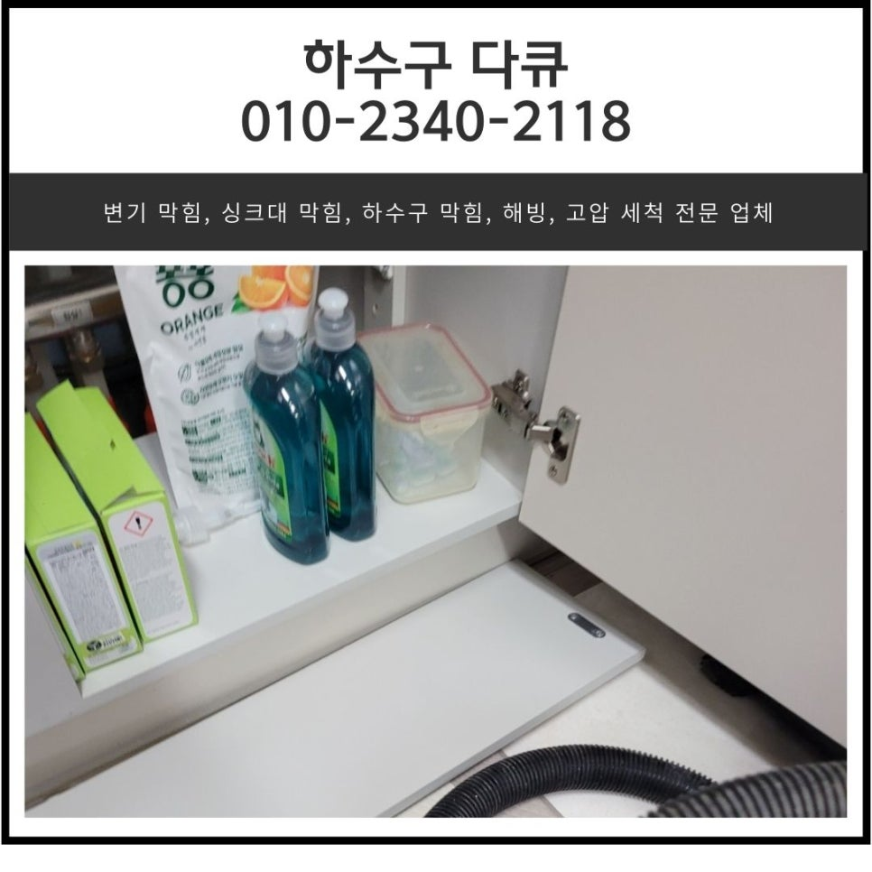
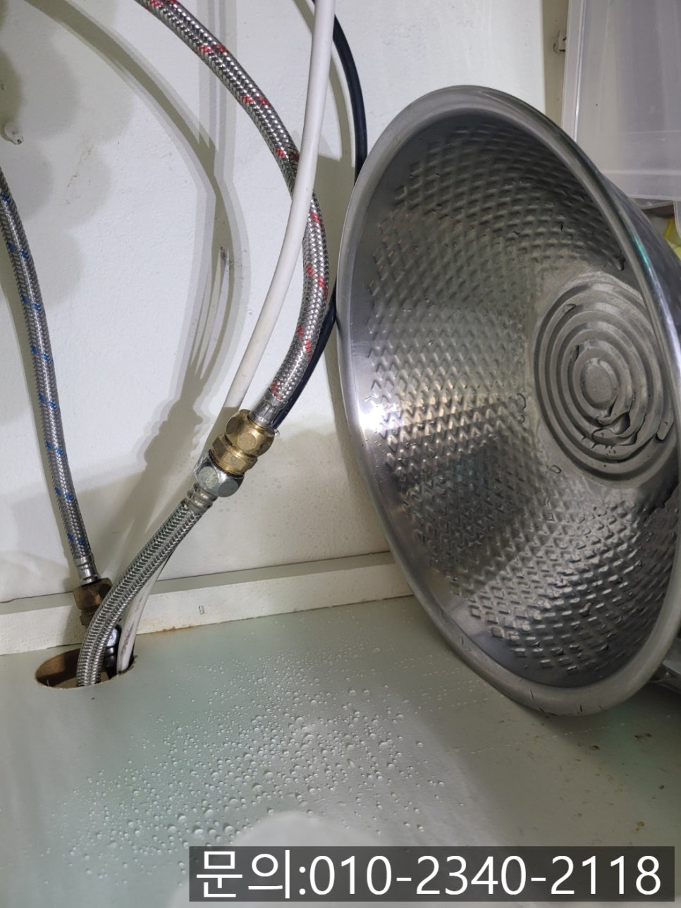
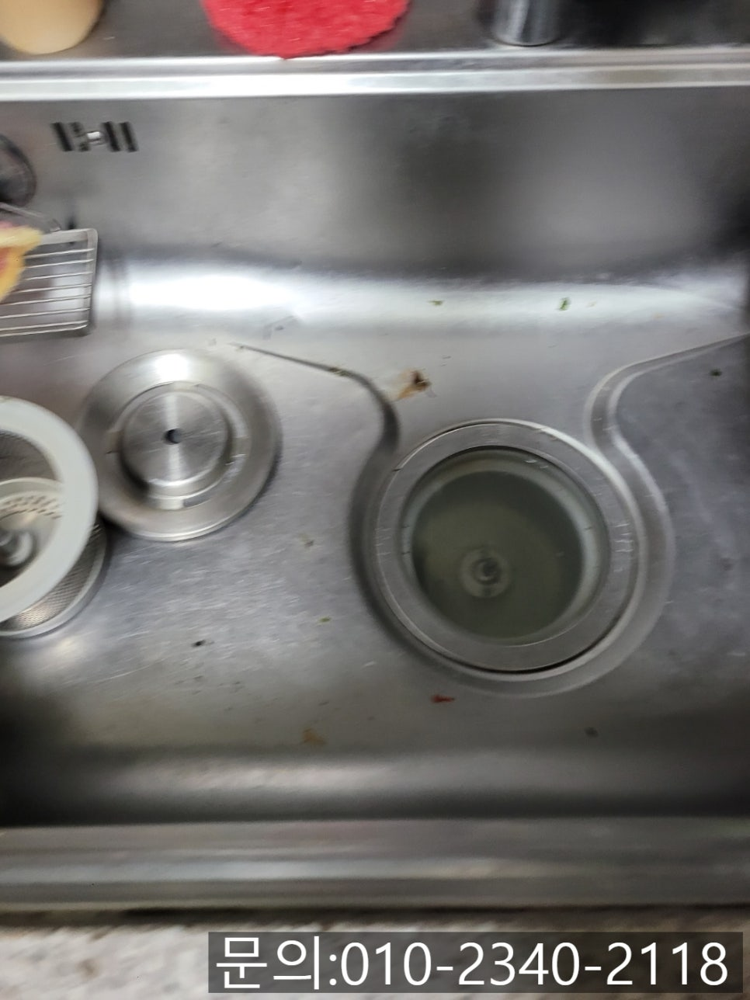
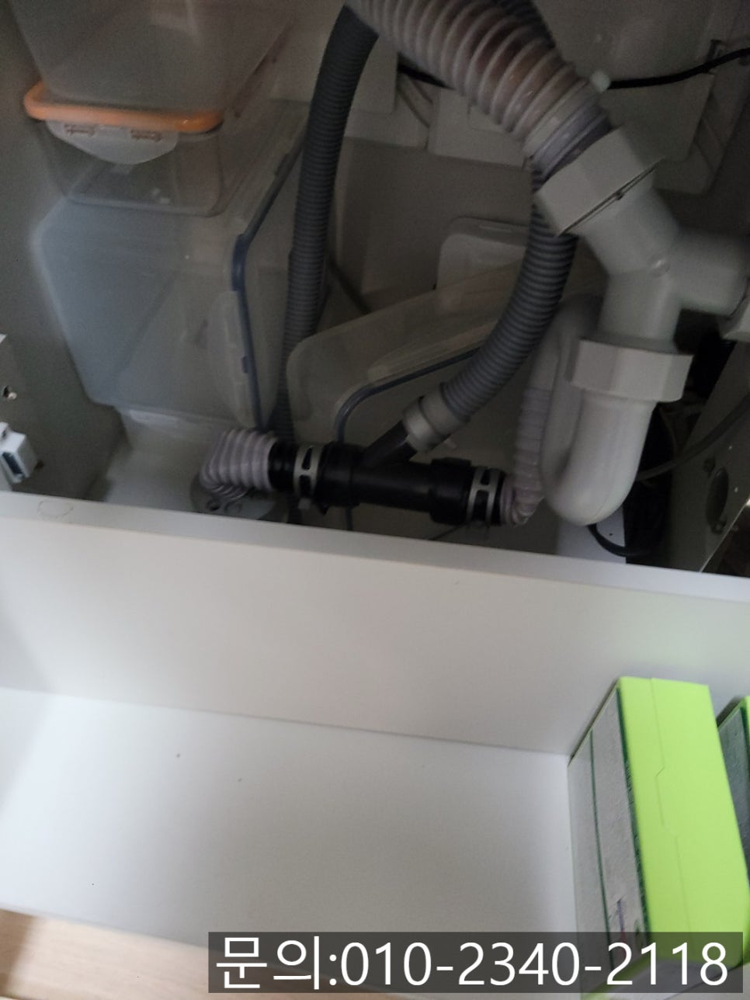
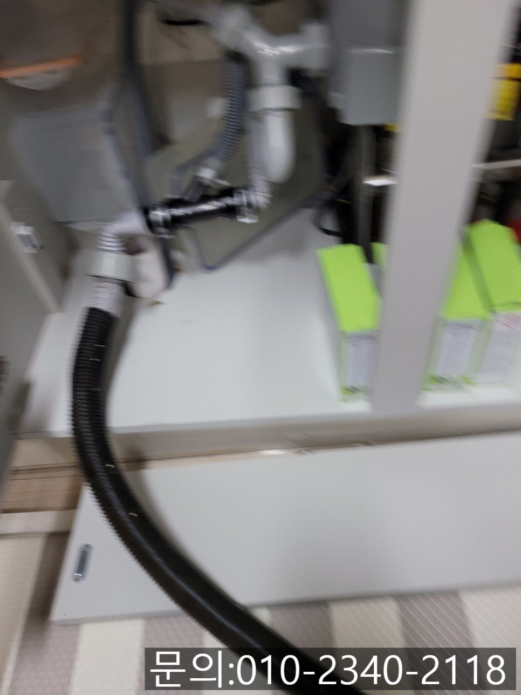
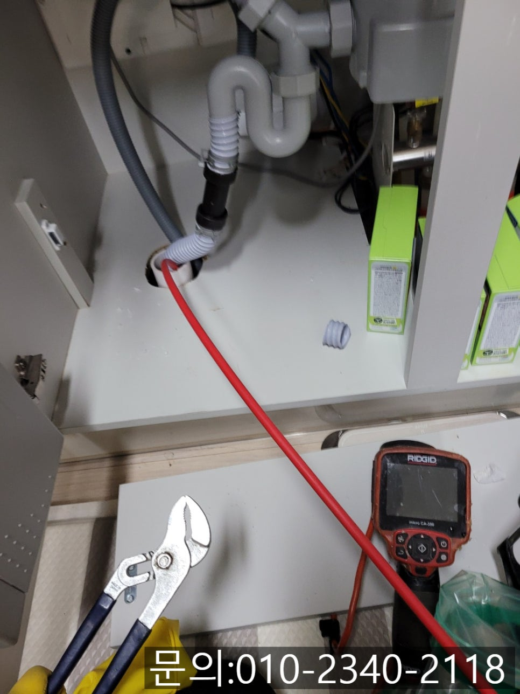
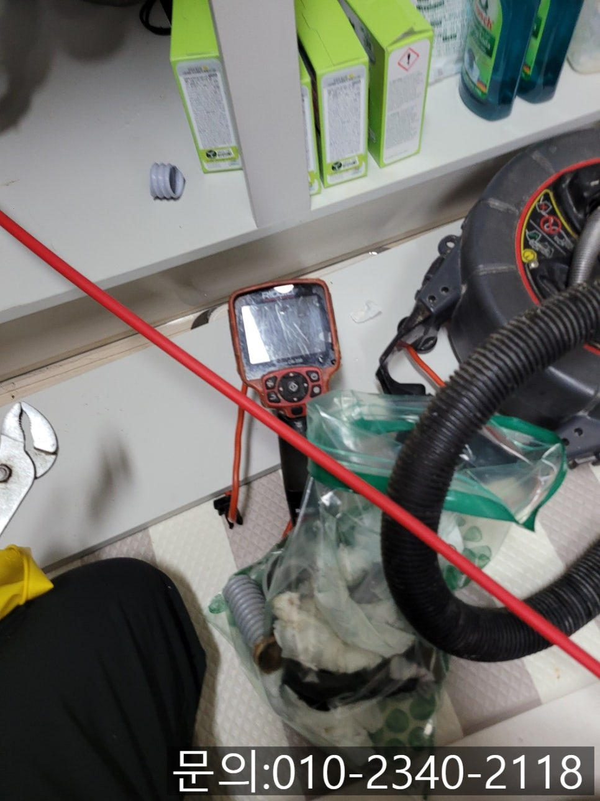

🏠 송탄동 싱크대 역류 평택 중앙동 하수구 배관 뚫어주는 업체
평택 중앙동 싱크대막힘 전문 시공 후기

📋 작업 개요
- 위치: 평택 중앙동, 중앙동, 평택
- 서비스 유형: 싱크대막힘, 하수구막힘, 배관막힘, 역류해결, 뚫는업체, 배관청소
- 작업 일시: 2024. 12. 3. 9:00
- 업체명: 하수구수사대 (010-5615-2118)
🔍 문제 상황
안녕하세요
송탄동 싱크대 역류, 평택 중앙동 하수구 배관 뚫어주는 업체 하수구 다큐입니다.
도대체 송탄동 싱크대 역류는 왜 생기는 걸까요?
가족의 식사를 책임지기 위해 주방의 싱크대를 사용하는 횟수가 많은데요.
음식을 만들기 위해 재료를 다듬고, 음식을 조리하고, 식기를 닦을 때 등 다양하게 싱크대를 사용하다 보면 소량의 음식물 찌꺼기나 채소에 묻어있는 흙 등의 이물질, 음식물에 포함되어 있는 기름 성분 등이 배수구로 흘러들어가게 됩니다.
조금씩 배수구로 흘러들어간 각종 이물질들은 배관 내부에 묻고, 마르고, 굳어가기를 반복하면서 점점 크기가 커지게 되면서 물의 흐름을 방해하게 되겠죠?

🔎 원인 분석
💡 전문가 진단: 현장점검
특히 고기를 굽거나 기름진 반찬을 하게 되면 프라이팬에 묻어있는 기름기, 또는 국이나 찌개 등에 포함되어 있는 기름 성분의 경우 대부분의 주부님들은 키친타월을 이용해 1차로 제거하더라도 완벽하게 제거할 수 없다 보니 조금씩 배수구로 흘러들어가 쌓일 수밖에 없습니다.
현장점검
오늘 소개해 드릴, 송탄동 싱크대 역류 현장 역시 오랜 시간 배수구로 흘러들어간 이물질들이 차곡차곡 쌓이면서 물의 흐름을 방해해 하수구 다큐로 연락을 주셨습니다.
현장에 도착하자마자 주방의 싱크대를 살펴보니 사용했던 물이 아주 천천히 흘러내려가 고여있는 것을 확인할 수 있었어요.
싱크대와 연결되어 있는 주름 배관도 꼼꼼하게 점검해 보니 사용한 물이 시원하게 흘러가도록 일자로 되어 있어야 하는데 꺾여있는 것을 확인했습니다.
사진처럼 주름 배관이 꺾여있는 경우에도 물의 흐름을 방해해 평택 중앙동 하수구 막힘이 자주 발생할 수밖에 없어요.
현장 점검을 마친 평택 중앙동 하수구 배관 뚫어주는 업체 하수구 다큐는 고객님과 상의한 끝에 배관 청소를 진행하기로 했습니다.

🔧 작업 과정
작업과정
사진이 흔들려서 선명하게 안 보이지만 주름 배관을 분리해 고여있던 물과 이물질을 제거하기 시작했어요.
가정의 진공청소기와 비슷한 방식으로 작동하는 석션을 사용해 1차로 배관에 고여있는 이물질을 제거하고 배관 내부도 직접 확인해 보기로 했습니다.
내시경 카메라를 진입시켜보니 음식물 찌꺼기와 기름 슬러지로 가득 차 있는 상태였어요.
내시경 카메라 렌즈에 기름 슬러지가 묻어 아무것도 보이지 않을 정도였습니다.
평택 중앙동 하수구 배관 뚫어주는 업체 하수구 다큐는 싱크대 막힘을 해결하기 위해 스프링 관통기를 사용해 신속하고 저렴하게 뚫을 수 있지만, 스프링 장비를 이용하게 될 경우 스프링 두께만 한 구멍만 생기고, 배관 내부에 이물질이 그대로 남아있다 보니 얼마 지나지 않아 싱크대 막힘과 역류가 다시 발생하게 되다 보니, 완벽하게 해결해 드리기 위해 플렉스 샤프트 장비를 사용해 배관 스케일링을 진행하기로 했어요.
플렉스 샤프트 장비는 본체와 연결되어 있는 전동드릴의 회전하는 힘을 전달받아 케이블이 배관 내부에서 회전하면서 이물질을 제거하는 방식으로 작업합니다.
내시경 카메라를 이용해 이물질이 붙어있는 위치를 확인하고 플렉스 샤프트기를 회전시켜 이물질을 잘게 분쇄하고, 석션기로 분쇄된 이물질을 빨아들이는 작업을 반복해서 진행해 주었어요.
수차례 반복해서 작업을 진행하자 점차 배관이 제 모습을 들어내기 시작합니다.
아직 기름 슬러지가 남아있다 보니 한참을 더 반복해서 진행하고 깨끗해진 배관을 확인할 수 있었어요.


✅ 작업 완료
배관 스케일링을 모두 마친 다음 싱크대와 배관을 연결해 주는 주름 호스를 너무 길지 않게 조절하여 접히지 않도록 교체해 드렸어요.
마지막으로 많은 양의 물을 흘려보내며 배관 내부에 다른 문제는 없는지 내시경 카메라를 이용해 꼼꼼하게 확인시켜드리고 작업을 마무리할 수 있었습니다.
경기도 평택시 고덕중앙로 322 4층 129호




⚠️ 주방 싱크대 배관 막힘 예방 수칙
- ✅ 기름기가 묻은 식기나 프라이팬은 설거지 전 키친타올로 반드시 기름때를 닦아내세요.
- ✅ 주기적으로 싱크대 개수대에 뜨거운 물을 가득 받아 한 번에 내려 배관 내부 기름을 씻어내세요.
- ✅ 배수구 거름망을 미세한 필터로 사용하시고 음식물 찌꺼기가 틈으로 새어 들지 않게 관리하세요.
- ✅ 베이킹소다와 식초를 뜨거운 물과 함께 일주일에 한 번씩 부어주면 배관 살균과 막힘 예방에 좋습니다.
💡 핵심 정리
- 확실한 장비 작업(내시경 점검 및 샤프트 스케일링)으로 원인을 뿌리 뽑습니다.
- 작업 후 1년 이내에 동일한 부위 재발 시 100% 무상 A/S 서비스를 보장합니다.
- 서울 · 경기 · 인천 전 지역에 24시간 언제든 긴급 출동할 수 있도록 항시 대기 중입니다.
❓ 자주 묻는 질문 (FAQ)
🚨 평택 중앙동 싱크대막힘 문제로 고민이신가요?
정확한 원인 진단과 확실한 시공으로 재발 없는 해결을 약속드립니다.
24시간 긴급 출동 | 서울 · 경기 · 인천 전지역 | 1년 내 재발 시 무상 A/S